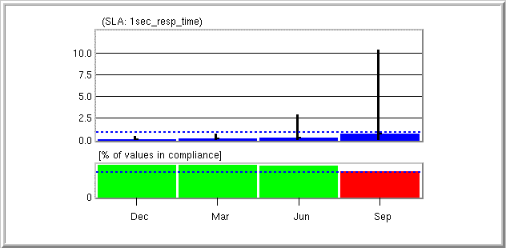

|
A statistic graph
| The graph in the panel below is called a statistic graph, which shows several important details about an actual statistic. There are three distinct values represented in a statistic graph (the statistic threshold, statistic average, and statistic minimum/maximum), each of which are explained in the following sections. |
A statistic graph |
| The dotted line (circled here in red) defines the threshold specified for this particular statistic (called the statistic threshold). For this example, the average value for Response Time should not exceed 1.0 seconds. |
|
The statistic threshold |
| The blue bars in the graph show the statistic average for each bucket. That is, during each time period (for this simulation, a period is 30 seconds) the average of all the values for a statistic collected during that period is calculated and plotted on the graph. Note that the statistic average does not exceed the statistic threshold on this section of the graph. |
|
|
|
| Another important result shown by this graph is the minimum and maximum values for each period. These lines show the range of values for the statistic collected during the bucket's time period. |
|
|
The statistic minimum/maximum |
| The top graph in the panel below is called a statistic graph,
which shows several important details about a statistic.
The bottom graph is called a percent compliance graph, and shows
the percentage of values in each period that comply with the statistic
threshold. These two graphs are explained in detail in the following
sections.
 |
| There are three distinct values represented in a statistic graph, the
statistic threshold, statistic average, and statistic minimum/maximum.
|
| In the percent compliance graph, the threshold (denoted by the dotted
blue line) defines the percentage of data points within a particular time
period that must conform to the statistic threshold for that bucket
to be in compliance. For this example, the percent compliance
threshold was set to 80%. This means that for each time period,
if more than 80% of the data points collected for a single period are below
the 1.0 second Response Time statistic threshold (shown in the above statistic
graph), that bucket is in compliance with the SLA.
|
The bars denoting the percent of data points
in compliance with the statistic threshold for a particular bucket are
color coded:
margin = 10% * (100% - compliance threshold) |
|